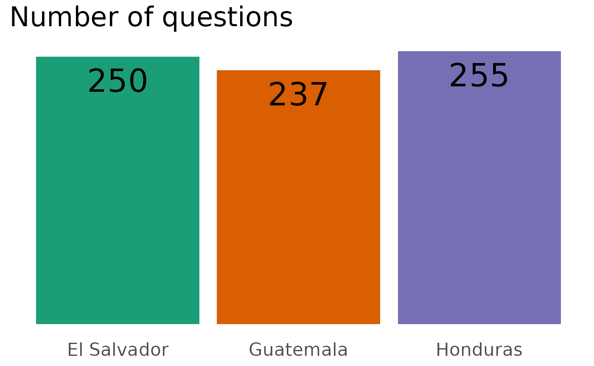
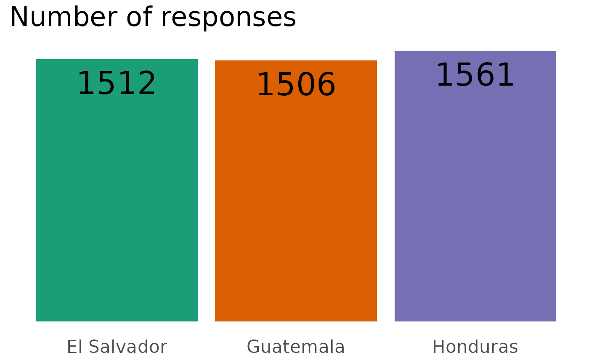
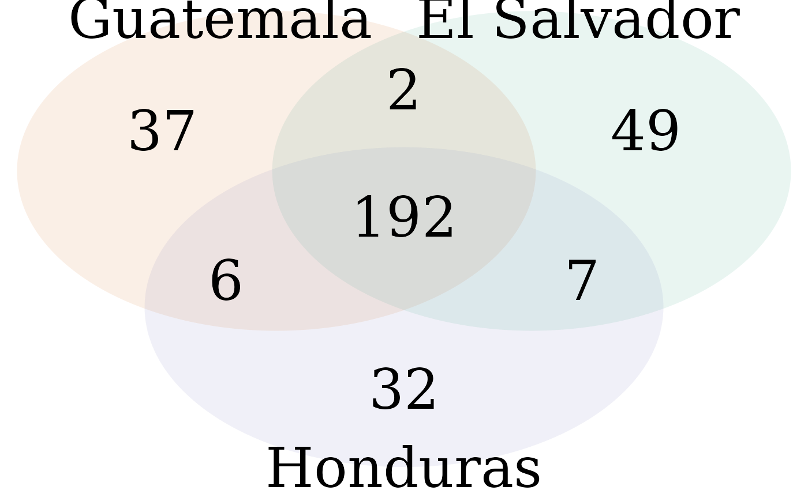
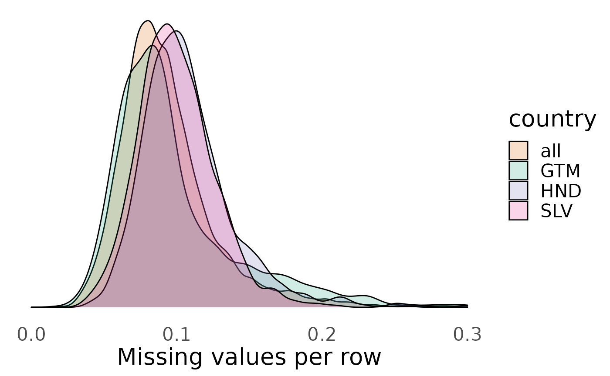

#> (polygon[GRID.polygon.67], polygon[GRID.polygon.68], polygon[GRID.polygon.69], polygon[GRID.polygon.70], polygon[GRID.polygon.71], polygon[GRID.polygon.72], text[GRID.text.73], text[GRID.text.74], text[GRID.text.75], text[GRID.text.76], text[GRID.text.77], text[GRID.text.78], text[GRID.text.79], text[GRID.text.80], text[GRID.text.81], text[GRID.text.82])#> [1] 0.0978253#> [1] 0.1002434#> [1] 0.1083318#> [1] 0.09347474
#> ctrycollect vb101 exc14 vb11 chipart107n vic1exta
#> 1.0000000 0.9807437 0.9515272 0.8997344 0.8406375 0.8320053#> ctrycollect vb101 exc14 info4 vic1exta vic2
#> 1.0000000 0.9874339 0.9497354 0.8723545 0.8148148 0.8148148#> ctrycollect vb101 exc14 prot7 prot4 muni10
#> 1.0000000 0.9795003 0.9654068 0.9493914 0.9487508 0.8725176#> ctrycollect vb101 exc14 vic2 vic1exta vic2aa
#> 1.0000000 0.9825289 0.9556672 0.8228871 0.8222319 0.8215768#> 0% 25% 50% 75% 100%
#> 0.000000000 0.003320053 0.015936255 0.067065073 1.000000000#> 0% 25% 50% 75% 100%
#> 0.000000000 0.001322751 0.004629630 0.029431217 1.000000000#> 0% 25% 50% 75% 100%
#> 0.000000000 0.003203075 0.012812300 0.059577194 1.000000000#> 0% 25% 50% 75% 100%
#> 0.000000000 0.002129286 0.008953920 0.037398995 1.000000000The most common missing responses are for:
vb101: Reason for nullifying ballot (98.3%)exc14: Paid a bribe at the courts (95.6%)vic2: Type of victimization (82.3%)vic2aa: Location of victimization (82.2%)exc11: Bribe required to process document in municipal government (77.5%)vb4new: Reason for not voting (74.7%)In general, questions with many missing answers were requesting information about fairly unusual experiences. In all cases, 50% of questions have missing-answer rates of less than 1-2%.